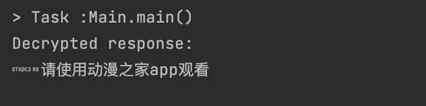

小小的更新
该页面有相关的 个人项目 , 您在文章中看到的某些代码片段可能会在其中。
上周末终于抽出时间更新了一下之前写的 dmzj备份脚本。一方面是因为最近工作稍微闲了些，另一方面则是由于一直主用的第三方 App 频繁抽风，也让我萌生了干脆毕其功于一役、彻底转向 self-hosting 的念头。
于是又重新扒了一遍他们的 APK（不确定是不是因为美国 IP 的缘故，官方应用的广告似乎收敛了不少，可用性尚可，但考虑到他们的 App 实在写得有些💩，我还是提不起兴趣去用）。这次倒是发现了一些新东西，简单做个记录。
API changes
这次距离上次更新时间并不算久，其实整体变化不大。虽然如此，他们的网络请求写法依然挺雷人的，每次看到都忍不住多看两眼：长长的Query直接拼字符串；用中文字符串充当枚举走分支判断来加一些特定参数；关键接口都要加密处理，但依旧不肯用 Retrofit，而是直接在 UI 层手动解密，整个突出一个“自由”。
真正变化的只有API路径改成了nnv4api.${DOMAIN}/v2/comic/xxx, 这个会强制校验coreToken和uid，然后proto又加了一个字段名曰isCanRead。让Claude帮忙对应更新了下。
coreToken revisit
之前的API其实并不会用到这个玩意，于是也没细究，但新的接口终于加上了强制校验，token不对直接什么都不返回。

于是不得不逆向分析一下这个 libdmzj.so，看看这个所谓的加密 token 生成算法是否藏有黑科技。毕竟，遇事不决就写 JNI，倒也有几分大厂 Mobile Arch 的味道了。然而……这个 token 的生成逻辑无非就是两次hash：先通过 getSignatureBytes 获取应用签名并进行一次 MD5，然后将其与 timestamp 和 salt 拼接后再进行一次 MD5，最终将该 MD5 与 timestamp 拼接，生成 token。
其实需要奇文共赏的是这个getSignatureBytes方法。不难发现，它本质上就是Java反射代码，却被包装成 JNI 来调用一个 Android Framework 的公共 API (也就是说，并不需要反射)。在Kotlin里可以one-liner写的功能，却非要用反射再加 JNI，可谓是双重的脱裤子放屁。
Before
1 | |
After
1 | |
而且说到底，通过编写 native 方法来规避 ART 的隐藏 API 检查，压根也不是这么实现的。Google 的工程师可没笨到只在 Java 层的 getDeclaredMethod 中加检查，而在 JNI 的 GetMethodID 上就放松警惕。下面是一个正确的规避方式。
1 | |
所以他们为什么要在JNI写这个coreToken的生成逻辑呢？到头来还是希腊奶。
getCoreToken() disassembly (trimmed):
1 | |
本博客所有文章除特别声明外，均采用 CC BY-SA 4.0 协议 ，转载请注明出处！